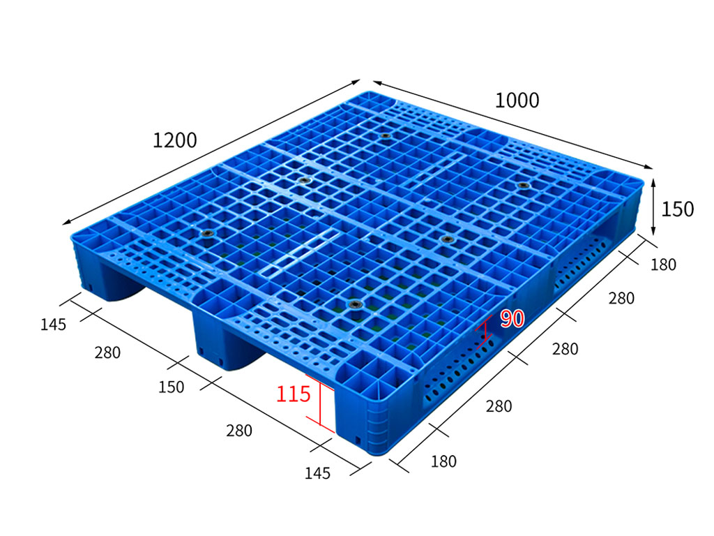
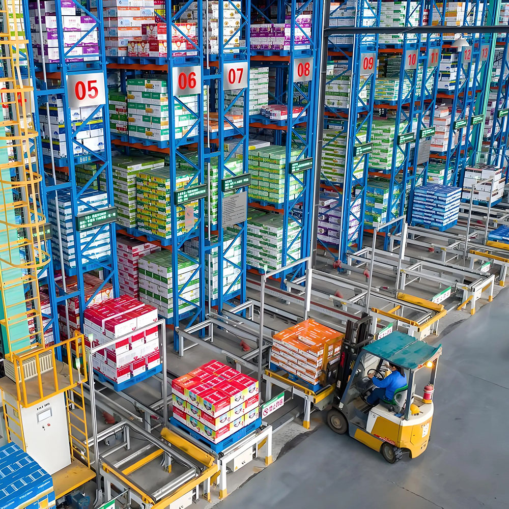

A model to review for beam racking, forklift handling and repeated warehouse use. Confirm rack span, load distribution, storage time and temperature before approval.
This page leads with fit and constraints. Benefits stay secondary to the conditions that determine suitability.
Best for / first review
Warehouse unit loads with defined support
Forklift handling with confirmed entry direction
Beam rack use where span and load footprint are known
Repeated handling with an identified inspection routine
Applications that can verify the selected material and configuration
Check before use
Do not approve from a headline load alone
Confirm clear rack span and support geometry
Check point loads, overhang and uneven distribution
State storage duration and operating temperature
Confirm pallet-jack, conveyor or automation contact points
02 / Conditional specifications
Numbers need their test and use conditions.
The values below are copied from the current site for layout review. They remain unverified in the owner fact file and must not be treated as an approved performance promise.
Prototype boundary
Current-site listing only. Before production migration, confirm source, test method, load distribution, support condition, duration, temperature and selected configuration.
Current-site field
Listed value
Condition required for production copy
Static load
3 t
Floor/support condition, distribution, duration and temperature
Dynamic load
0.9 t
Handling equipment, speed, floor, distribution and cycle
Racking load
1 t
Clear span, beam support, distribution, duration and temperature
Weight
12 kg
Selected material, reinforcement and production tolerance
Material
HDPE / PP
Confirm the material for the selected configuration
Process
Injection moulding
Confirm against the selected model record
03 / Handling & storage
One model, several interfaces to verify.
A production page should make equipment compatibility an explicit review—not an implied universal fit.
01 — FORKLIFT
Entry & tine contact
Confirm direction, opening clearance, tine position and load-centre behaviour.
02 — PALLET JACK
Wheel path
Check entry height, wheel travel, runner contact and exit clearance.
03 — BEAM RACK
Support span
Record clear span, beam width, load footprint and storage duration.
04 — CONVEYOR
Bottom contact
Map roller or chain pitch, transitions, sensors and deflection limits.
05 — STACK
Top-load interface
Confirm packaging stability, bottom contact and loaded stack duration.
04 / Product evidence
Show the structure buyers need to inspect.
The existing gallery can identify deck, runners, fork openings and handling context. It is not used as proof of a test or certification.

Structure view / existing product asset

Application context / not test evidence
05 / Ask about this model
Confirm the 1210 against your operation.
The production form will preserve the current backend while carrying the model and page context into the enquiry.